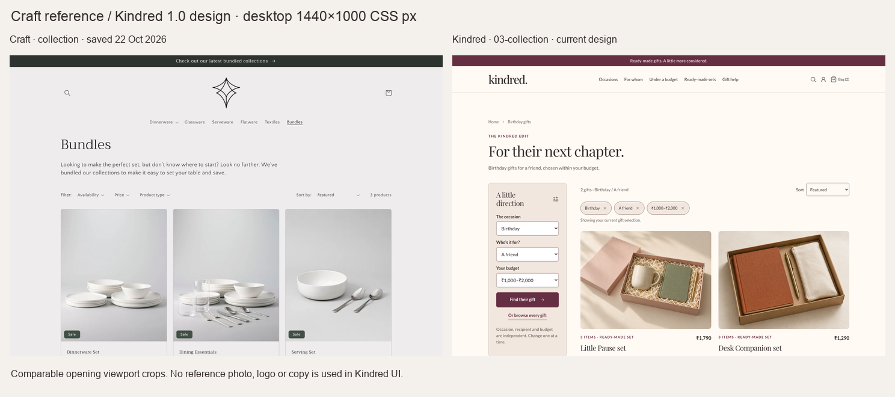
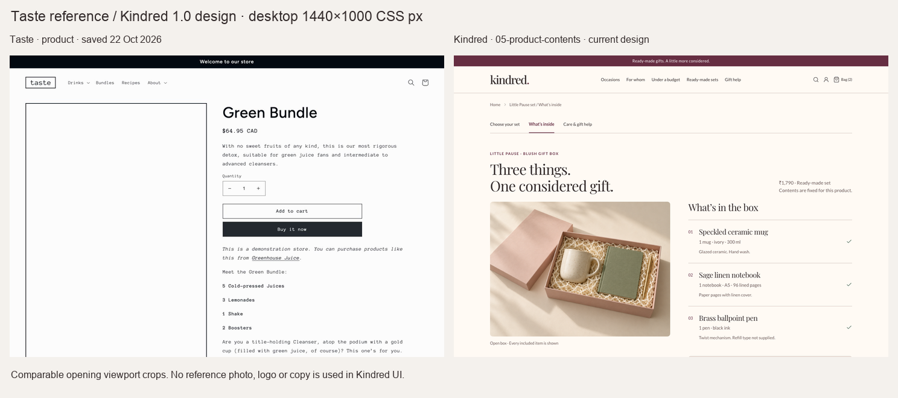
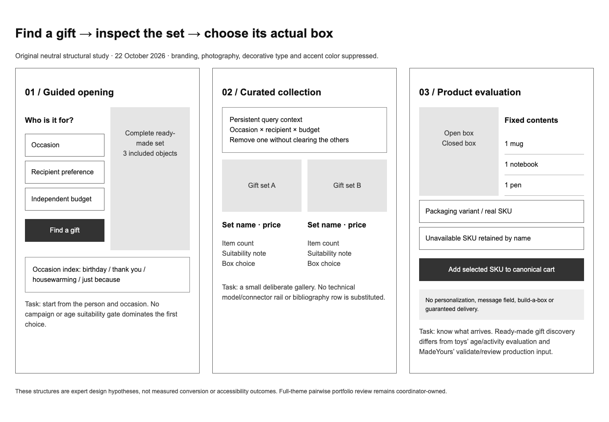

Reference conventions.
Original gift decisions.
22 October 2026 · design version 1.0 · saved Shopify reference screenshots inspected at 1440×1000 CSS pixels, DPR1. These review boards use equal-scale opening viewport crops; Kindred sources are independent local renderings.
Craft / curated sets → occasion-led discovery

Observed: Craft’s Bundles collection presents three sold-as-one sets with large product media, prices and normal catalog controls. Public collection; saved research screenshot dated 22 October 2026.
Problem: a gift buyer may know the person and budget before knowing which product type to buy. Retained: complete-object product media and familiar sort/pagination. Difference: Kindred’s persistent independent occasion/recipient/budget finder and count/suitability/packaging card anatomy. Contract: typed gift facts plus real paginated query facets (C).
Taste / explicit bundle contents → inspect what arrives

Observed: the selected Taste PDP names a fixed bundle’s contents beneath its purchase controls. Public product; saved research screenshot dated 22 October 2026. The saved opening screenshot has incomplete main-media loading; it is not evidence that blank media is intended.
Problem: buyers need to verify every included object and its packaging. Retained: explicit set contents and normal SKU purchase mechanics. Difference: Kindred pairs open/closed box photography with a numbered factual checklist and named real packaging variants. No nutritional claims, subscription flow or gift-message capability is carried over. Contract: safe gift facts (C), media (A), actual packaging variant propagation (A/B).
Both saved dossiers provide broader home, collection, mobile/menu, PDP and empty-cart observations. Successful cart mutations, payment, all filter combinations, every focus state and real delivery were not verified. Public text was re-accessed on the research date; tool crawl freshness differs. No claimed improvement in conversion or accessibility is inferred.
Task structure without the decoration

| Adjacent niche | Kindred’s structural distinction |
|---|---|
| Playfield / toys | Occasion, recipient preference and budget across stocked gift types; no age-band suitability gate or toy activity bento. |
| MadeYours / personalization | Fixed set and existing SKU; no user production text, validation workspace or custom order configuration. |
| Threadline / fashion | Counted contents and box identity; no fit/size guide or apparel silhouette retrieval. |
This is an original design hypothesis. The coordinator owns review against the actual other nine packs. No remote Shopify page was restyled, mutated, installed or transacted.